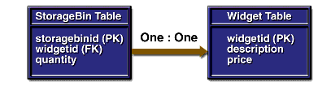
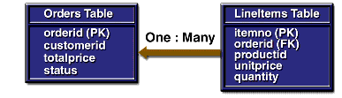
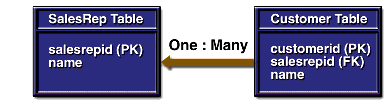
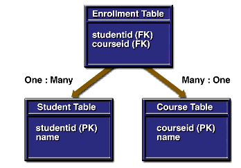

www.netbeans.org
Feedback
java.sun.com
|
Download
www.netbeans.org |
|
API
Feedback java.sun.com |
Mapping Table Relationships for Bean-Managed Persistence
In a relational database, tables can be related by common columns. The relationships between the tables affect the design of their corresponding entity beans. The entity beans discussed in this section are backed up by tables with the following types of relationships:
One-to-One Relationships
In a one-to-one relationship, each row in a table is related to a single row in another table. For example, in a warehouse application, a
storagebintable might have a one-to-one relationship with awidgettable. This application would model a physical warehouse in which each storage bin contains one type of widget and each widget resides in one storage bin.Figure 7-1 illustrates the
storagebinandwidgettables. Because thestoragebiniduniquely identifies a row in thestoragebintable, it is that table's primary key. Thewidgetidis the primary key of thewidgettable. The two tables are related because thewidgetidis also a column in thestoragebintable. By referring to the primary key of thewidgettable, thewidgetidin thestoragebintable identifies which widget resides in a particular storage bin in the warehouse. Because thewidgetidof thestoragebintable refers to the primary key of another table, it is called a foreign key. (The figures in this chapter denote a primary key with PK and a foreign key with FK.)

Figure 7-1 One-to-One Table Relationship
A dependent (child) table includes a foreign key that matches the primary key of the referenced (parent) table. The values of the foreign keys in the
storagebin(child) table depend on the primary keys in thewidget(parent) table. For example, if thestoragebintable has a row with awidgetidof 344, then the widget table should also have a row whosewidgetidis 344.When designing a database application, you can choose to enforce the dependency between the parent and child tables. There are two ways to enforce such a dependency: by defining a referential constraint in the database or by performing checks in the application code. The
storagebintable has a referential constraint namedfk_widgetid:CREATE TABLE storagebin (storagebinid VARCHAR(3) CONSTRAINT pk_storagebin PRIMARY KEY, widgetid VARCHAR(3), quantity INTEGER, CONSTRAINT fk_widgetid FOREIGN KEY (widgetid) REFERENCES widget(widgetid));The source code for the following example is in this directory:
To open the project, choose File
Open Project (Ctrl-Shift-O). In the file chooser, go to <
INSTALL>/j2eetutorial14/examples/ejb/storagebin/, select theStorageBindirectory, and choose Open Project.The
StorageBinBeanandWidgetBeanclasses illustrate the one-to-one relationship of thestoragebinandwidgettables. TheStorageBinBeanclass contains variables for each column in thestoragebintable, including the foreign key,widgetId:The
ejbFindByWidgetIdmethod of theStorageBinBeanclass returns thestorageBinIdthat matches a givenwidgetId:public String ejbFindByWidgetId(String widgetId) throws FinderException { String storageBinId; try { storageBinId = selectByWidgetId(widgetId); } catch (Exception ex) { throw new EJBException("ejbFindByWidgetId: " + ex.getMessage()); } if (storageBinId == null) { throw new ObjectNotFoundException ("Row for widgetId " + widgetId + " not found."); } else { return storageBinId; } }The
ejbFindByWidgetIdmethod locates thewidgetIdby querying the database in theselectByWidgetIdmethod:private String selectByWidgetId(String widgetId) throws SQLException { String storageBinId; makeConnection(); String selectStatement = "select storagebinid " + "from storagebin where widgetid = ? "; PreparedStatement prepStmt = con.prepareStatement(selectStatement); prepStmt.setString(1, widgetId); ResultSet rs = prepStmt.executeQuery(); if (rs.next()) { storageBinId = rs.getString(1); } else { storageBinId = null; } prepStmt.close(); releaseConnection(); return storageBinId; }To find out in which storage bin a widget resides, the
StorageBinClientprogram calls thefindByWidgetIdmethod:String widgetId = "777"; StorageBin storageBin = storageBinHome.findByWidgetId(widgetId); String storageBinId = (String)storageBin.getPrimaryKey(); int quantity = storageBin.getQuantity();Running the StorageBinBean Example
- In the IDE, choose Tools
- Create the database tables by running the
create.sqlscript.
- Make sure that the
appsrv.rootproperty in your<INSTALL>/j2eetutorial14/examples/file points to the location of your local Application Server installation.- In a terminal window, go to this directory:
<INSTALL>/j2eetutorial14/examples/ejb/storagebin/- Type the following command, which runs the
create.sqlscript:
asant -buildfile create-db.xml- Choose File
<INSTALL>/j2eetutorial14/examples/ejb/storagebin/, select theStorageBinClientdirectory, and choose Open Project.- The project needs to know the location of some JAR files on its classpath and the StorageBin project. Right-click the StorageBinClient project and choose Resolve Reference Problems. Select the
"StorageBin" project could not be found messageand click Resolve. In the file chooser, select either the completed StorageBin project in<INSTALL>/j2eetutorial14/examples/ejb/storagebin/or the project you created and click OK.- Select the
"appserv-rt.jar" file/folder could not be foundmessage and click Resolve. Navigate to thelibdirectory in your application server installation, selectappserv-rt.jar, and click OK. The IDE automatically resolves the location ofj2ee.jar. Click Close.- Right-click the StorageBin project and choose Deploy Project. The IDE builds the project, deploys the EJB module, and registers a JDBC connection pool and database resource for the project.
- Right-click the StorageBinClient project and choose Run Project. The client should display the following:
...
777 388 500 1.0 Duct Tape
...One-to-Many Relationships
If the primary key in a parent table matches multiple foreign keys in a child table, then the relationship is one-to-many. This relationship is common in database applications. For example, an application for a sports league might access a
teamtable and aplayertable. Each team has multiple players, and each player belongs to a single team. Every row in the child table (player) has a foreign key identifying the player's team. This foreign key matches theteamtable's primary key.The sections that follow describe how you might implement one-to-many relationships in entity beans. When designing such entity beans, you must decide whether both tables are represented by entity beans, or only one.
A Helper Class for the Child Table
Not every database table needs to be mapped to an entity bean. If a database table doesn't represent a business entity, or if it stores information that is contained in another entity, then you should use a helper class to represent the table. In an online shopping application, for example, each order submitted by a customer can have multiple line items. The application stores the information in the database tables shown by Figure 7-2.

Figure 7-2 One-to-Many Relationship: Order and Line Items
Not only does a line item belong to an order, but it also does not exist without the order. Therefore, the
lineitemstable should be represented with a helper class and not with an entity bean. Using a helper class in this case is not required, but doing so might improve performance because a helper class uses fewer system resources than does an entity bean.The source code for the following example is in this directory:
To open the project, choose File
<INSTALL>/j2eetutorial14/examples/ejb/order/, select theOrderdirectory, and choose Open Project.The
LineItemandOrderBeanclasses show how to implement a one-to-many relationship using a helper class (LineItem). The instance variables in theLineItemclass correspond to the columns in thelineitemstable. TheitemNovariable matches the primary key for thelineitemstable, and theorderIdvariable represents the table's foreign key. Here is the source code for theLineItemclass:public class LineItem implements java.io.Serializable { String productId; int quantity; double unitPrice; int itemNo; String orderId; public LineItem(String productId, int quantity, double unitPrice, int itemNo, String orderId) { this.productId = productId; this.quantity = quantity; this.unitPrice = unitPrice; this.itemNo = itemNo; this.orderId = orderId; } public String getProductId() { return productId; } public int getQuantity() { return quantity; } public double getUnitPrice() { return unitPrice; } public int getItemNo() { return itemNo; } public String getOrderId() { return orderId; } }The
OrderBeanclass contains anArrayListvariable namedlineItems. Each element in thelineItemsvariable is aLineItemobject. ThelineItemsvariable is passed to theOrderBeanclass in theejbCreatemethod. For everyLineItemobject in thelineItemsvariable, theejbCreatemethod inserts a row into thelineitemstable. It also inserts a single row into theorderstable. The code for theejbCreatemethod follows:public String ejbCreate(String orderId, String customerId, String status, double totalPrice, ArrayList lineItems) throws CreateException { try { insertOrder(orderId, customerId, status, totalPrice); for (int i = 0; i < lineItems.size(); i++) { LineItem item = (LineItem)lineItems.get(i); insertItem(item); } } catch (Exception ex) { throw new EJBException("ejbCreate: " + ex.getMessage()); } this.orderId = orderId; this.customerId = customerId; this.status = status; this.totalPrice = totalPrice; this.lineItems = lineItems ; return orderId; }The
OrderClientprogram creates and loads anArrayListofLineItemobjects. The program passes thisArrayListto the entity bean when it invokes thecreatemethod:ArrayList lineItems = new ArrayList(); lineItems.add(new LineItem("p23", 13, 12.00, 1, "123")); lineItems.add(new LineItem("p67", 47, 89.00, 2, "123")); lineItems.add(new LineItem("p11", 28, 41.00, 3, "123")); ... OrderRemote duke = home.create("123", "c44", "open", totalItems(lineItems), lineItems);Other methods in the
OrderBeanclass also access both database tables. TheejbRemovemethod, for example, not only deletes a row from theorderstable but also deletes all corresponding rows in thelineitemstable. TheejbLoadandejbStoremethods synchronize the state of anOrderBeaninstance, including thelineItemsArrayList, with theordersandlineitemstables.The
ejbFindByProductIdmethod enables clients to locate all orders that have a particular product. This method queries thelineitemstable for all rows with a specificproductId. The method returns aCollectionofOrderobjects. TheOrderClientprogram iterates through theCollectionand prints the primary key of each order:Collection c = home.findByProductId("p67"); Iterator i=c.iterator(); while (i.hasNext()) { OrderRemote order = (OrderRemote)i.next(); String id = (String)order.getPrimaryKey(); System.out.println(id); }Running the OrderBean Example
- In the IDE, choose Tools
- Create the database tables by running the
create.sqlscript.
- Make sure that the
appsrv.rootproperty in your<INSTALL>/j2eetutorial14/examples/file points to the location of your local Application Server installation.- In a terminal window, go to this directory:
<INSTALL>/j2eetutorial14/examples/ejb/order/- Type the following command, which runs the
create.sqlscript:
asant -buildfile create-db.xml- Choose File
<INSTALL>/j2eetutorial14/examples/ejb/order/, select theOrderClientdirectory, and choose Open Project.- The project needs to know the location of some JAR files on its classpath and the Order project. Right-click the OrderClient project and choose Resolve Reference Problems. Select the
"Order" project could not be found messageand click Resolve. In the file chooser, select either the completed Order project in<INSTALL>/j2eetutorial14/examples/ejb/order/or the project you created and click OK.- Select the
"appserv-rt.jar" file/folder could not be foundmessage and click Resolve. Navigate to thelibdirectory in your application server installation, selectappserv-rt.jar, and click OK. The IDE automatically resolves the location ofj2ee.jar. Click Close.- Right-click the Order project and choose Deploy Project. The IDE builds the project, deploys the EJB module, and registers a JDBC connection pool and database resource for the project.
- Right-click the OrderClient project and choose Run Project. The client should display the following:
...
123 1 p23 12.0
123 2 p67 89.0
123 3 p11 41.0
123
456An Entity Bean for the Child Table
You should consider building an entity bean for a child table under the following conditions:
These conditions exist in the following scenario. Suppose that each sales representative in a company has multiple customers and that each customer has only one sales representative. The company tracks its sales force using a database application. In the database, each row in the
salesreptable (parent) matches multiple rows in thecustomertable (child). Figure 7-3 illustrates this relationship.

Figure 7-3 One-to-Many Relationship: Sales Representative and Customers
The
SalesRepBeanandCustomerBeanentity bean classes implement the one-to-many relationship of thesalesandcustomertables.The source code for this example is in this directory:
To open the project, choose File
INSTALL>/j2eetutorial14/examples/ejb/salesrep/, select the SalesRep directory, and choose Open Project.The
SalesRepBeanclass contains a variable namedcustomerIds, which is anArrayListofStringelements. TheseStringelements identify which customers belong to the sales representative. Because thecustomerIdsvariable reflects this relationship, theSalesRepBeanclass must keep the variable up-to-date.The
SalesRepBeanclass instantiates thecustomerIdsvariable in thesetEntityContextmethod and not inejbCreate. The container invokessetEntityContextonly once--when it creates the bean instance--thereby ensuring thatcustomerIdsis instantiated only once. Because the same bean instance can assume different identities during its life cycle, instantiatingcustomerIdsinejbCreatemight cause multiple and unnecessary instantiations. Therefore, theSalesRepBeanclass instantiates thecustomerIdsvariable insetEntityContext:public void setEntityContext(EntityContext context) { this.context = context; customerIds = new ArrayList(); try { Context initial = new InitialContext(); Object objref = initial.lookup("java:comp/env/ejb/Customer"); customerHome = (CustomerRemoteHome)PortableRemoteObject.narrow (objref,CustomerRemoteHome.class); } catch (Exception ex) { throw new EJBException("setEntityContext: " + ex.getMessage()); } }Invoked by the
ejbLoadmethod,loadCustomerIdsis a private method that refreshes thecustomerIdsvariable. There are two approaches to coding a method such asloadCustomerIds: fetch the identifiers from thecustomerdatabase table, or get them from theCustomerBeanentity bean. Fetching the identifiers from the database might be faster, but it exposes the code in theSalesRepBeanclass to theCustomerBeanbean's underlying database table. In the future, if you were to change theCustomerBeanbean's table (or move the bean to a different Application Server), you might need to change theSalesRepBeancode. But if theSalesRepBeanclass gets the identifiers from theCustomerBeanentity bean, no coding changes would be required. The two approaches present a trade-off: performance versus flexibility. TheSalesRepBeanexample opts for flexibility, loading thecustomerIdsvariable by calling thefindBySalesRepandgetPrimaryKeymethods ofCustomerBean. Here is the code for theloadCustomerIdsmethod:private void loadCustomerIds() { customerIds.clear(); try { Collection c = customerHome.findBySalesRep(salesRepId); Iterator i=c.iterator(); while (i.hasNext()) { CustomerRemote customer = (CustomerRemote)i.next(); String id = (String)customer.getPrimaryKey(); customerIds.add(id); } } catch (Exception ex) { throw new EJBException("Exception in loadCustomerIds: " + ex.getMessage()); } }If a customer's sales representative changes, the client program updates the database by calling the
setSalesRepIdmethod of theCustomerBeanclass. The next time a business method of theSalesRepBeanclass is called, theejbLoadmethod invokesloadCustomerIds, which refreshes thecustomerIdsvariable. (To ensure thatejbLoadis invoked before each business method, set the transaction attributes of the business methods toRequired.) For example, theSalesRepClientprogram changes thesalesRepIdfor a customer named Mary Jackson as follows:The
salesRepIdvalue 543 identifies a sales representative named Janice Martin. To list all of Janice's customers, theSalesRepClientprogram invokes thegetCustomerIdsmethod, iterates through theArrayListof identifiers, and locates eachCustomerBeanentity bean by calling itsfindByPrimaryKeymethod:SalesRepRemote janice = salesHome.findByPrimaryKey("543"); ArrayList a = janice.getCustomerIds(); i = a.iterator(); while (i.hasNext()) { String customerId = (String)i.next(); CustomerRemote customer = customerHome.findByPrimaryKey(customerId); String name = customer.getName(); System.out.println(customerId + ": " + name); }Running the SalesRepBean Example
- In the IDE, choose Tools
- Create the database tables by running the
create.sqlscript.
- Make sure that the
appsrv.rootproperty in your<INSTALL>/j2eetutorial14/examples/file points to the location of your local Application Server installation.- In a terminal window, go to this directory:
<INSTALL>/j2eetutorial14/examples/ejb/salesrep/- Type the following command, which runs the
create.sqlscript:
asant -buildfile create-db.xml- Choose File
<INSTALL>/j2eetutorial14/examples/ejb/salesrep/, select theSalesRepClientdirectory, and choose Open Project.- The project needs to know the location of some JAR files on its classpath and the SalesRep project. Right-click the SalesRepClient project and choose Resolve Reference Problems. Select the
"SalesRep" project could not be found messageand click Resolve. In the file chooser, select either the completed SalesRep project in<INSTALL>/j2eetutorial14/examples/ejb/salesrep/or the project you created and click OK.- Select the
"appserv-rt.jar" file/folder could not be foundmessage and click Resolve. Navigate to thelibdirectory in your application server installation, selectappserv-rt.jar, and click OK. The IDE automatically resolves the location ofj2ee.jar. Click Close.- Right-click the SalesRep project and choose Deploy Project. The IDE builds the project, deploys the EJB module, and registers a JDBC connection pool and database resource for the project.
- Right-click the SalesRepClient project and choose Run Project. The client should display the following:
...
customerId = 221
customerId = 388
customerId = 456
customerId = 844
987: Mary Jackson
221: Alice Smith
388: Bill Williamson
456: Joe Smith
844: Buzz Murphy
...Many-to-Many Relationships
In a many-to-many relationship, each entity can be related to multiple occurrences of the other entity. For example, a college course has many students and each student may take several courses. In a database, this relationship is represented by a cross-reference table containing the foreign keys. In Figure 7-4, the cross-reference table is the
enrollmenttable. These tables are accessed by theStudentBean,CourseBean, andEnrollerBeanclasses.

Figure 7-4 Many-to-Many Relationship: Students and Courses
The source code for this example is in this directory:
To open the project, choose File
INSTALL>/j2eetutorial14/examples/ejb/enroller/, select the Enroller directory, and choose Open Project.The
StudentBeanandCourseBeanclasses are complementary. Each class contains anArrayListof foreign keys. TheStudentBeanclass contains anArrayListnamedcourseIds, which identifies the courses the student is enrolled in. Similarly, theCourseBeanclass contains anArrayListnamedstudentIds.The
ejbLoadmethod of theStudentBeanclass adds elements to thecourseIdsArrayListby callingloadCourseIds, a private method. TheloadCourseIdsmethod gets the course identifiers from theEnrollerBeansession bean. The source code for theloadCourseIdsmethod follows:private void loadCourseIds() { courseIds.clear(); try { EnrollerRemote enroller = enrollerHome.create(); ArrayList a = enroller.getCourseIds(studentId); courseIds.addAll(a); } catch (Exception ex) { throw new EJBException("Exception in loadCourseIds: " + ex.getMessage()); } }Invoked by the
loadCourseIdsmethod, thegetCourseIdsmethod of theEnrollerBeanclass queries theenrollmenttable:Only the
EnrollerBeanclass accesses theenrollmenttable. Therefore, theEnrollerBeanclass manages the student-course relationship represented in theenrollmenttable. If a student enrolls in a course, for example, the client calls theenrollbusiness method, which inserts a row:If a student drops a course, the
unEnrollmethod deletes a row:And if a student leaves the school, the
deleteStudentmethod deletes all rows in the table for that student:The
EnrollerBeanclass does not delete the matching row from thestudenttable. That action is performed by theejbRemovemethod of theStudentBeanclass. To ensure that both deletes are executed as a single operation, you must ensure that they belong to the same transaction.Running the EnrollerBean Example
- In the IDE, choose Tools
- Create the database tables by running the
create.sqlscript.
- Make sure that the
appsrv.rootproperty in your<INSTALL>/j2eetutorial14/examples/file points to the location of your local Application Server installation.- In a terminal window, go to this directory:
<INSTALL>/j2eetutorial14/examples/ejb/enroller/- Type the following command, which runs the
create.sqlscript:
asant -buildfile create-db.xml- Choose File
<INSTALL>/j2eetutorial14/examples/ejb/enroller/, select theEnrollerClientdirectory, and choose Open Project.- The project needs to know the location of some JAR files on its classpath and the Enroller project. Right-click the EnrollerClient project and choose Resolve Reference Problems. Select the
"Enroller" project could not be found messageand click Resolve. In the file chooser, select either the completed Enroller project in<INSTALL>/j2eetutorial14/examples/ejb/enroller/or the project you created and click OK.- Select the
"appserv-rt.jar" file/folder could not be foundmessage and click Resolve. Navigate to thelibdirectory in your application server installation, selectappserv-rt.jar, and click OK. The IDE automatically resolves the location ofj2ee.jar. Click Close.- Right-click the Enroller project and choose Deploy Project. The IDE builds the project, deploys the EJB module, and registers a JDBC connection pool and database resource for the project.
- Right-click the EnrollerClient project and choose Run Project. The client should display the following:
...
Denise Smith:
220 Power J2EE Programming
333 XML Made Easy
777 An Introduction to Java Programming
An Introduction to Java Programming:
823 Denise Smith
456 Joe Smith
388 Elizabeth Willis
...
|
Download
www.netbeans.org |
|
API
Feedback java.sun.com |
All of the material in The J2EE(TM) 1.4 Tutorial is copyright-protected and may not be published in other works without express written permission from Sun Microsystems.